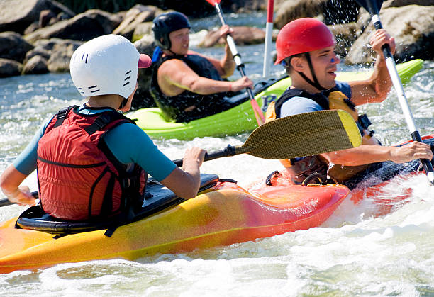
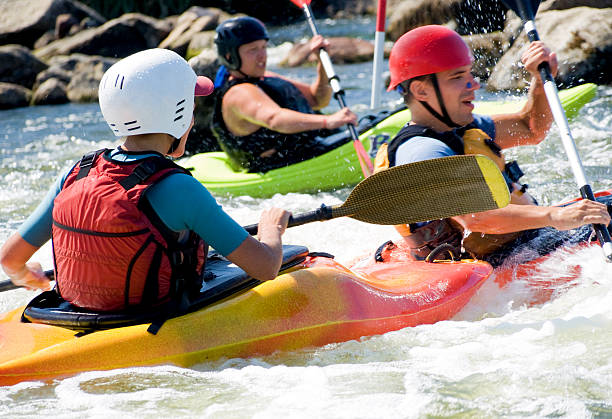

The Purpoe
The purpose of this site will serve as a remote access to members, competitors and lovers/viewers of rafting competition


The purpose of this site will serve as a remote access to members, competitors and lovers/viewers of rafting competition
The earliest historical record of drafting goes back to 2000 BC, as proven by a recovered fossilized plan showing an aerial view of a Babylonian castle. This showed that, even in the early eras, people used drawings to guide them in building structures
Whitewater rafting can be traced back to 1811 when the first recorded attempt to navigate the Snake River in Wyoming was planned. With no training, experience, or proper equipment, the river was found to be too difficult and dangerous. Hence, it was given the nickname "Mad River".